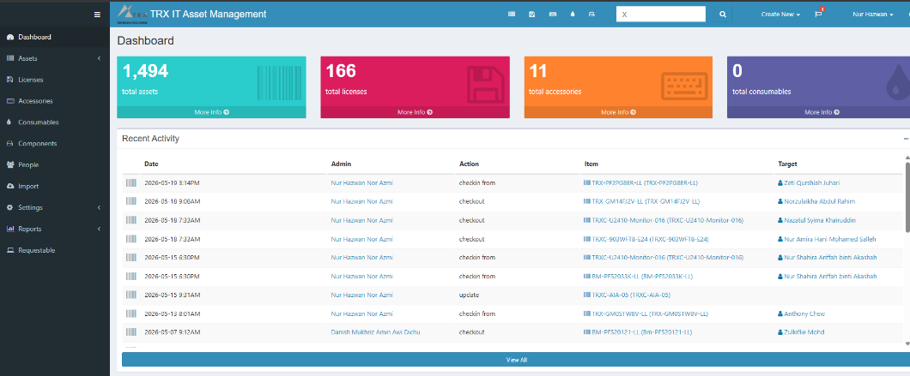
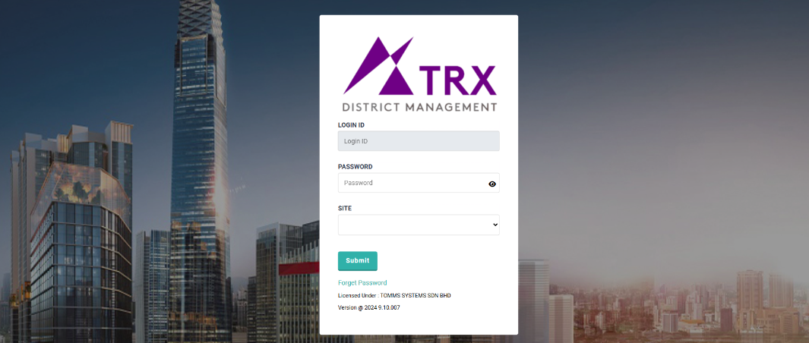
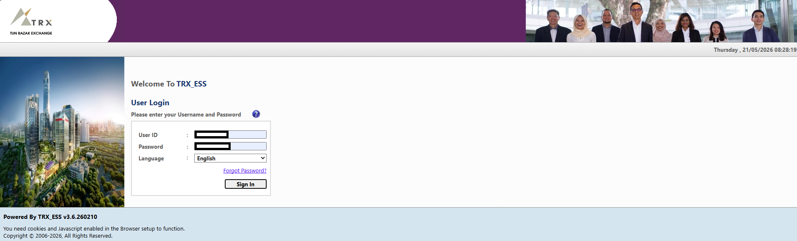

An overview of the core software infrastructures and digital applications identified during our interview session at TRX City Sdn Bhd.

Brief Explanation: [Insert your template text here. Briefly describe what this system does, who uses it, and its main objective within the organization. Keep it concise to ensure the presentation flows smoothly.]
Brief Explanation: [Insert your template text here. Provide a short summary of how the IFCA Application manages financial or property data, its primary function, and its overall goal.]

Brief Explanation: [Insert your template text here. Explain the purpose of FMS in tracking maintenance, coordinating facility tasks, and the specific objectives it achieves for TRX City.]

Brief Explanation: [Insert your template text here. Describe how the ESS streamlines HR processes, allows employee autonomy for claims/leave, and its organizational benefit.]